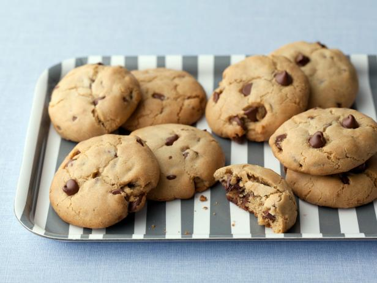
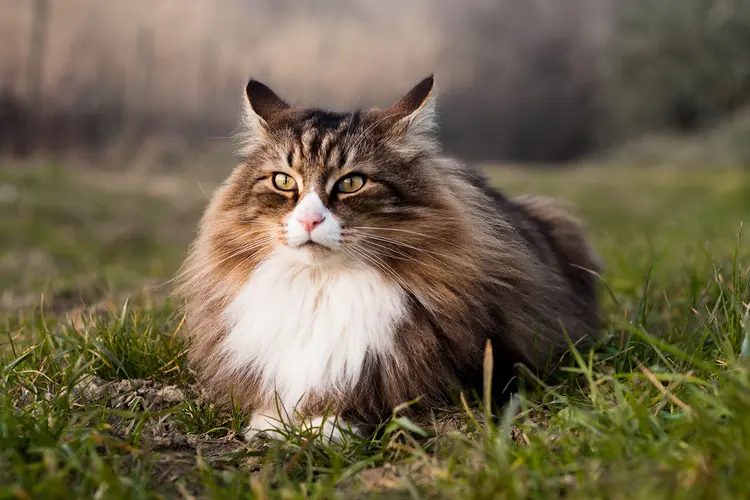

Welcome!
hi my name is abigail! I love cats, baking, reading and art! click on the pictures to change the backround!


hi my name is abigail! I love cats, baking, reading and art! click on the pictures to change the backround!

